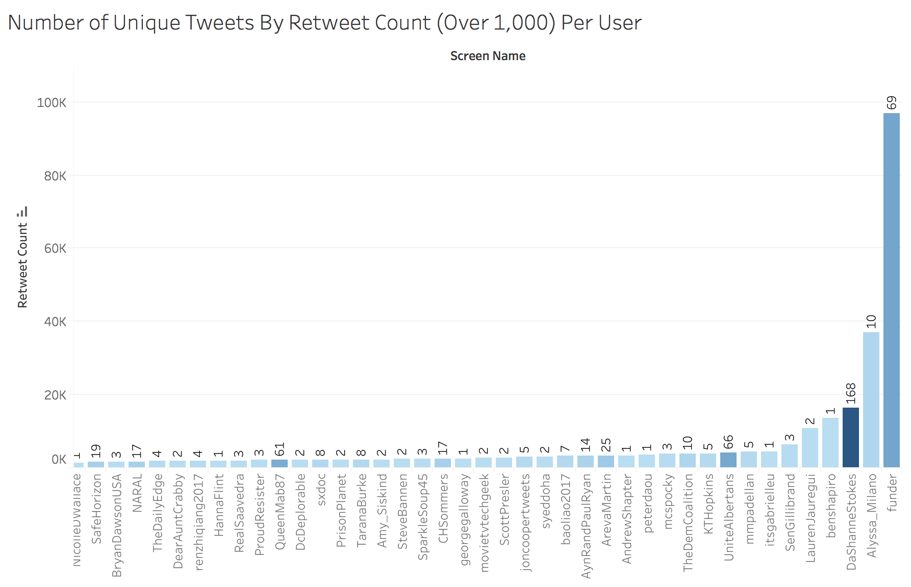
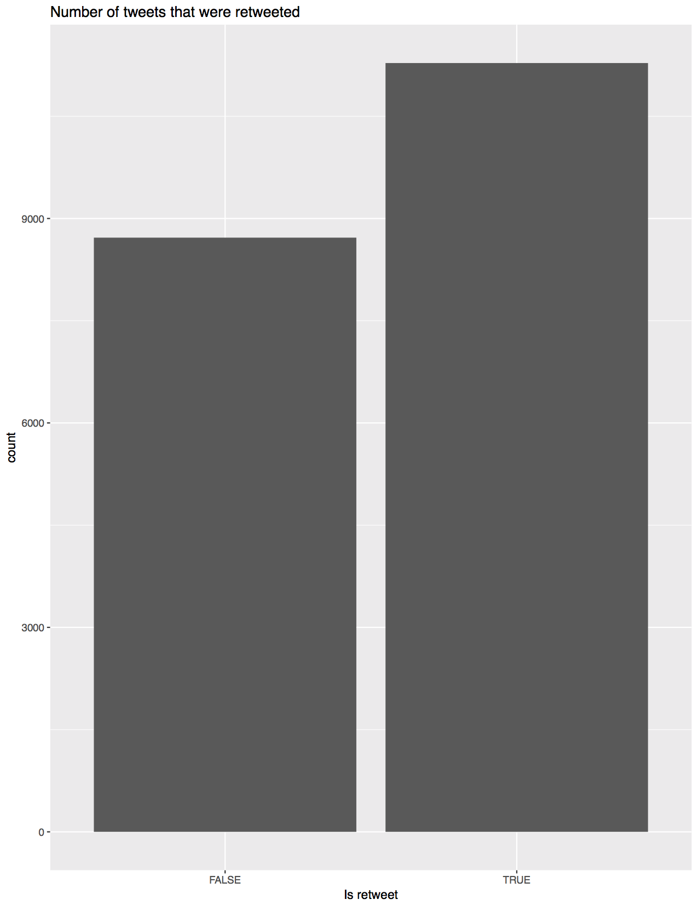
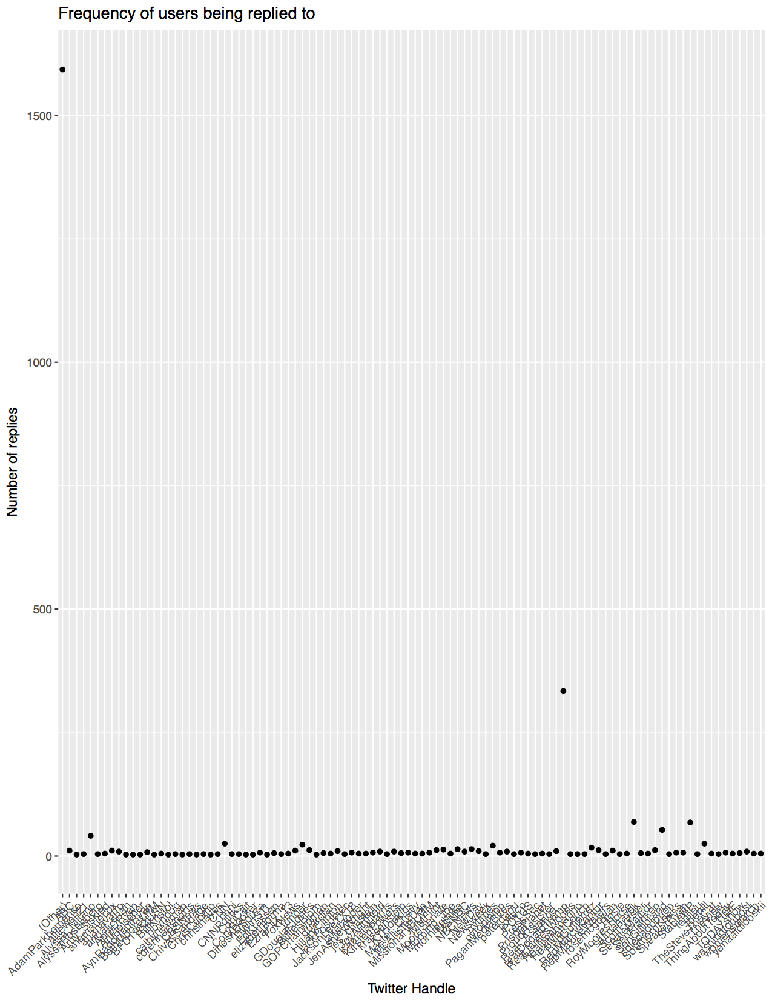
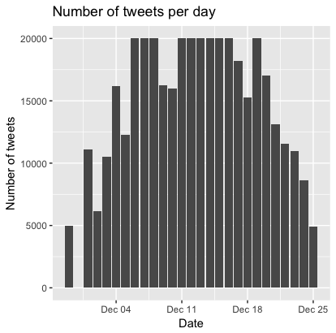

While there weren't any obvious trends, the data was clearly telling two very important stories. Firstly, Alyssa Milano tweeted about #MeToo in October of 2017, yet by December, there was no seeming slowdown to the conversation. People were still finding ways to talk about me too, either through their own stories, or by retweeting others and making sure theirs don't go unheard.
I was therefore interested in 2 things:
is_retweet == false
With an idea of what story the data might be telling, I used R to do further data exploration.
    My new dataset I would analyze would be a much smaller subset--for runtime purposes--contains only the tweets from December 13, 2017, the median date of the dataset, and only the unique tweets.
unique_tweets <- which(cleaned_data$isRetweet == TRUE)
cleaned_data <- cleaned_data[-unique_tweets,]
Using this newly cleaned data set, with 11102 rows, and 4 columns including the raw text, username, and number of retweets, I began building the visualization you see on the home page.